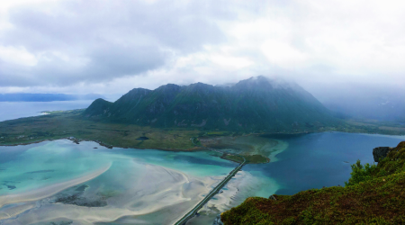

Embracing the Enchantment: Exploring the Nature of Kabelvåg
Nestled within the captivating archipelago of the Lofoten Islands,
Kabelvåg emerges as a beacon of natural splendor, offering
visitors an enchanting tapestry of landscapes to explore. Situated
on the northern shores of Austvågøya Island, Kabelvåg boasts a
harmonious blend of rugged mountains, serene fjords, and lush
greenery, inviting adventurers and nature enthusiasts to immerse
themselves in its breathtaking beauty.

Captivating Vistas: The Roadside Charm of Delpsheia
Perched atop the picturesque Delpsheia hillside, overlooking a
winding road that traces its way through the breathtaking
landscapes of Lofoten, lies a vantage point of unparalleled
beauty. This hidden gem offers a panoramic view that encapsulates
the essence of the region's rugged coastal terrain, majestic
peaks, and azure waters, inviting travelers to pause and immerse
themselves in the awe-inspiring vista that unfolds before them.

Atop Nordfjellet: A Majestic Vista Overlooking Rørvikstranda in
Lofoten
Nordfjellet, a towering sentinel in the heart of the Lofoten
archipelago, stands as a testament to the raw, unbridled beauty of
Norway's coastal landscapes. Perched atop its windswept summit,
one is granted a perspective unlike any other, where the rugged
majesty of the mountains converges with the tranquil serenity of
the sea, and the golden sands of Rørvikstranda stretch out as if
reaching towards the horizon.